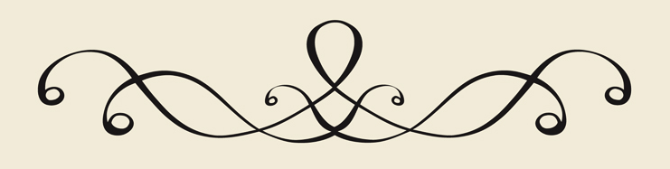

Добро пожаловать!
"В переводах я передаю не слово словом, но мысль мыслью".
Иероним, "Письмо к Паммахию о наилучшем способе перевода"
Я – дипломированный переводчик, магистр, а также присяжный переводчик для судов и нотариусов г. Берлина. Я предлагаю письменные и устные переводы для языковых пар немецкий - русский, русский - немецкий и письменные переводы для языковой пары английский - русский. Более подробно обо мне вы можете узнать здесь.

Мои услуги включают в себя:
- Заверенные переводы (переводы, точность, правильность и полноту которых заверяет присяжный переводчик, например, свидетельство о рождении, свидетельство о браке и т.д.)
- Письменные переводы (переводы по темам ИТ, медицина, туризм, техника и др., например, информационные брошюры, презентации, описания изделий и т.д.)
- Устные переводы (последовательный перевод на переговорах, во время экскурсии по предприятию и т.д. в Берлине и его окрестностях)
- Редактирование (проверка текстов, как бумажных, так и электронных, на предмет грамматических и стилистических ошибок, а также ошибок в правописании и пунктуации)
Чтобы узнать предварительную стоимость заказа, отправьте мне, пожалуйста, запрос с текстом, который необходимо перевести, на электронный адрес o.syasina@gmail.com. По всем вопросам обращайтесь по телефону 0049 (0) 157 37487377.